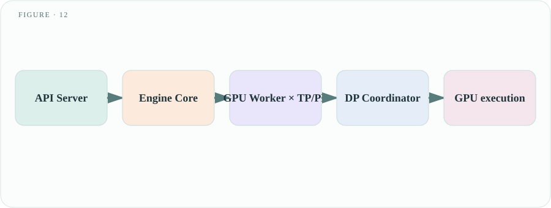

vLLM V1 不是简单的“1 个 Master + N 个 Worker”。官方架构按职责拆分 API Server、Engine Core 和 GPU Worker；启用 Data Parallel 时，还会出现 DP Coordinator。进程数量由并行配置决定。

12.1 API Server：处理外部请求
API Server 接收 HTTP / OpenAI-compatible 请求，完成输入处理（例如 tokenization 与多模态数据加载），并把请求发送给 Engine Core。默认通常是一个 API Server；Data Parallel 部署可按 DP 规模扩展 API Server 数量，也可通过配置调整。
12.2 Engine Core：调度与 KV Cache 管理
每个 Data Parallel rank 对应一个 Engine Core。它运行 Scheduler、管理 KV Cache，并协调模型执行。不要把 Engine Core 与 GPU Worker 混为一谈：前者负责请求调度和引擎协调，后者负责 GPU 上的模型执行。
12.3 GPU Worker：每张 GPU 的执行进程
每张 GPU 由相应的 Worker process 管理。Worker 加载模型权重（或对应并行分片）、执行 forward，并管理 GPU 侧资源。TP 与 PP 决定一个 Engine Core 关联多少 GPU Worker。
12.4 DP Coordinator：Data Parallel 才需要的协调者
当 --data-parallel-size 大于 1 时，系统会引入 DP Coordinator 来协调 DP ranks 的负载与执行。它不是所有单机部署都会存在的固定进程。
单个 Engine Core 的概念视图：
API Server
│ ZMQ
▼
Engine Core (Scheduler + KV Cache Manager)
│
├── GPU Worker 0
├── GPU Worker 1
└── GPU Worker 2 ... (由 TP × PP 决定)
Data Parallel > 1 时：
多个 API Server / Engine Core rank
+ DP Coordinator12.5 用配置推导进程数量
官方架构文档给出：API Server 数量默认与 DP 有关；Engine Core 数量为 DP；每个 Engine Core 的 GPU Worker 数量由 TP × PP 决定；DP 大于 1 时有额外 coordinator。阅读源码或排障时，应按实际 TP、PP、DP 和 API server count 推导，而不是套用固定的“1+N”图。
V1 的模块化设计降低了职责耦合，但不意味着单个 Worker 崩溃后请求必然自动无损迁移。故障恢复行为要结合 executor、API server、进程监控和部署编排逐项验证。
参考资料与证据
- vLLM 架构概览V1 Process Architecture
- vLLM V1 指南Differences from V0